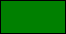

GameMaker Studio 2 propose une sélection complète de fonctions permettant de manipuler la couleur et l'alpha de ce qui est dessiné à l'écran (pour mélanger des images à l'aide de modes de fusion spéciaux et d'autres fonctions spécifiques à la PGU, voir la section Contrôle GPU. Ces fonctions vous permettent de séparer les couleurs. dans leurs composants, créez de nouvelles couleurs et manipulez alpha pour modifier la façon dont différentes parties de votre jeu sont dessinées. Outre ces fonctions, de nombreuses constantes peuvent également être utilisées comme couleurs de base. les fonctions:
| Constant | Couleur | Valeur |
|---|---|---|
| c_aqua | 16776960 | |
| c_black | 0 | |
| c_blue | 16711680 | |
| c_dkgray |  | 4210752 |
| c_fuchsia |  | 16711935 |
| c_gray |  | 8421504 |
| c_green |  | 32768 |
| c_lime | 65280 | |
| c_ltgray | 12632256 | |
| c_maroon | 128 | |
| c_navy |  | 8388608 |
| c_olive |  | 32896 |
| c_orange | 4235519 | |
| c_purple |  | 8388736 |
| c_red |  | 255 |
| c_silver |  | 12632256 |
| c_teal | 8421376 | |
| c_white |  | 16777215 |
| c_yellow |  | 65535 |
Notez que vous pouvez également créer des couleurs à partir de leur valeur hexadécimale en utilisant au préalable le symbole "$". Ces valeurs peuvent également être utilisées dans les fonctions de couleur pour obtenir des teintes de composant ou pour le mélange, etc. La valeur hexadécimale de ces couleurs est divisée. en trois parties au format Bleu / Vert / Rouge afin, par exemple, de définir une couleur pourpre que vous pouvez utiliser:
col = $983c95
Où 98 est le composant bleu, 3c est le composant vert et 95 est le composant rouge.
Les fonctions suivantes peuvent être utilisées pour obtenir les teintes des composants, la teinte composée, la saturation et la luminosité d'une couleur sélectionnée, ainsi que les propriétés alpha et autres:
Ces fonctions peuvent être utilisées pour créer des couleurs à partir de valeurs d'entrée brutes pour les composants de couleur:
Les fonctions suivantes peuvent être utilisées pour définir les différentes options de dessin à l'écran, notamment l'alpha, la couleur et le fondu: